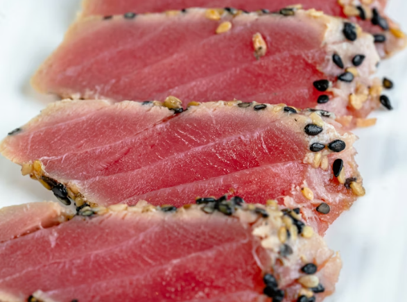

Home
Sesame-Seared Tuna

This sesame-seared tuna is an easy, great-tasting dish. Fresh tuna steaks are coated with sesame seeds, then quickly seared and served rare, so be sure to use good quality fresh tuna.
Prep Time:
10 mins
Cooking Time:
1 mins
Total Time:
11 mins
Servings:
4
Yield:
4 steaks
Ingredients
- 1/4 cup soy sauce
- 2 tablespoons sesame oil
- 1 tablespoon mirin (Japanese sweet wine)
- 1 tablespoon honey
- 1 tablespoon rice wine vinegar
- 1/2 cup sesame seeds
- 4 (6 ounce) tuna steaks
- 1 tablespoon olive oil
- wasabi pastewasabi paste
Directions
- Gather all ingredients.
- Stir together soy sauce, sesame oil, mirin, and honey in a small bowl
- Pour half into a separate small bowl, stir in rice wine vinegar, and set it aside as a dipping sauce.
- Spread sesame seeds out on a plate. Coat tuna steaks with remaining soy sauce mixture, then press into sesame seeds to coat.
- Heat olive oil in a cast iron skillet over high heat until very hot. Place steaks in the pan; sear for about 30 seconds on each side.
- Serve with dipping sauce and wasabi paste.